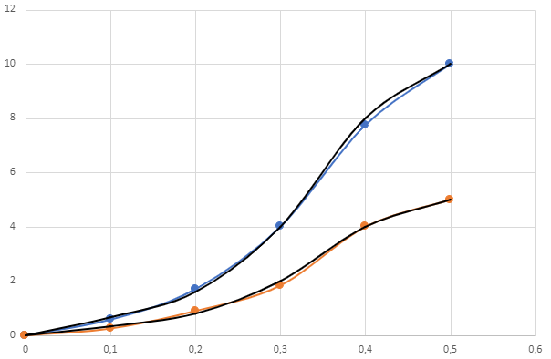

1- Die erzeugten Gasvolumina bei der Elektrolyse von Wasser verhandelt sich im Verhältnis 2:1, wobei doppelt so viel Wasserstoff (H2) wie Sauerstoff (O2) produziert wird.
2- 2H2O <---> 2H2 + O2
3- Kathode: 4H3O+ + 4e- <---> 2H2 + 4H2O
| Wasserstoff | Sauerstoff | |||||||||
|---|---|---|---|---|---|---|---|---|---|---|
| Strom (A) | Zeit t (s) | Volumen H2 (ml) | Volumen H2 (ml) | V/t (ml/min) | Volumen O2 (ml) | Volumen O2 (ml) | V/t (ml/min) | |||
| Start | Ende | Start | Ende | |||||||
| 0 | 0 | 0 | 0 | 0 | 0 | 0 | 0 | 0 | 0 | |
| 0,1 | 6 | 0 | 4 | 4 | 2/3 | 0 | 2 | 2 | 1/3 | |
| 0,2 | 5 | 4 | 8 | 4 | 4/5 | 2 | 4 | 2 | 2/5 | |
| 0,3 | 3 | 8 | 12 | 4 | 4/3 | 4 | 6 | 2 | 2/3 | |
| 0,4 | 2 | 12 | 16 | 4 | 2 | 6 | 8 | 2 | 1 | |
| 0,5 | 2 | 0 | 4 | 4 | 2 | 0 | 2 | 2 | 1 | |
Hier bei jede 0,1A wird das Volume von Wasserstoff fast um 4ml erhöhen und von Sauerstoff um 2ml.
